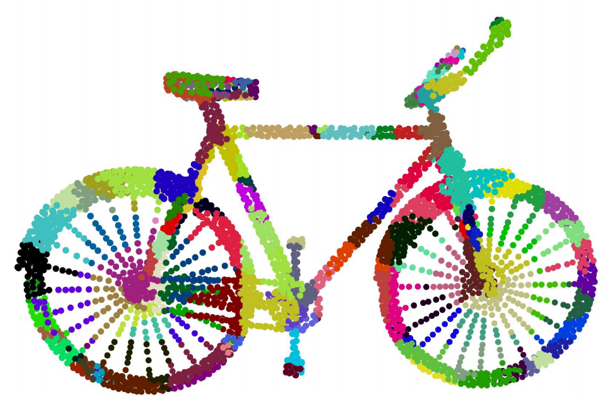
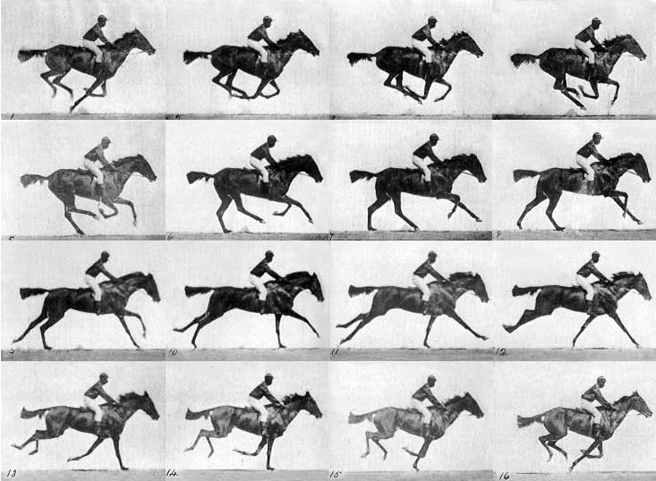

I am a staff research scientist at Google working on computer vision and machine learning. I received my Ph.D. in Computer Science from Brown University, M.Phil. in Electronic Engineering from the Chinese University of Hong Kong, and B.Eng. in Electronic and Information Engineering from Harbin Institute of Technology. I was a postdoctoral fellow at Harvard University and then a senior research scientist at NVIDIA before joining Google. I am a recipient of the PAMI Young Researcher award in 2020, the Longuet-Higgins prize at CVPR 2020, the best paper honorable mention award at CVPR 2018, and the first prize in the robust optical flow competition at CVPR 2018 and ECCV 2020. I served as an area chair for CVPR/ECCV/BMVC, and co-organized several workshops/tutorials at CVPR/ECCV/SIGGRAPH.
News
March, 2021: Papers on ‘Learning a better training set for optical flow’, ‘Articulated shape reconstruction from videos’, 'Dense human correspondence' and ‘Adaptive prototype learning for few-shot segmentation’ accepted to CVPR’21.

Selected Publications
Please see my Google scholar profile for a complete list.
Jointly optimize data generation and model training for optical flow.
D. Sun, D. Vlasic, C. Herrmann, V. Jampani, M. Krainin, H. Chang, R. Zabih, W.T. Freeman, and C. Liu
Computer Vision and Pattern Recognition, CVPR’21 (oral)
Reconstructs nonrigid 3D structures from videos without a category-specific shape template.
G. Yang, D. Sun, V. Jampani, D. Vlasic, F. Cole, H. Chang, R. Ramanan, W.T. Freeman, and C. Liu
Computer Vision and Pattern Recognition, CVPR’21

A compact shared-encoder network along with semi-supervised loss functions for depth and optical flow estimation.
H. Jiang, D. Sun, V. Jampani, Z. Lv, E. Learned-Miller and J. Kautz
Internationl Conference on Computer Vision, ICCV’19 (oral)
Generalization of spatially-invariant convolutions to spatially-varying convolutions with applications in joint-image upsampling, conditional random fields and layer hot-swapping.
H. Su, V. Jampani, D. Sun, O. Gallo, E. Learned-Miller and J. Kautz
Computer Vision and Pattern Recognition, CVPR’19
pdf / poster / video / project page / code (github)

A general unsupervised deep learning framework for learning depth, optical flow, camera motion and motion segmentation from videos.
A. Ranjan, V. Jampani, L. Balles, K. Kim, D. Sun, J. Wulff and M. J. Black
Computer Vision and Pattern Recognition, CVPR’19
An end-to-end trainable deep superpixel algorithm that allows learning with flexible loss functions resulting in the learning of task-specific superpixels.
V. Jampani, D. Sun, M-Y. Liu, M-H. Yang and J. Kautz
European Conference on Computer Vision, ECCV’18
pdf / poster / video / project page / code (github)

A compact and effective network built using well-known principles for optical flow.
D. Sun, X. Yang, M. Liu, and J. Kautz
Computer Vision and Pattern Recognition, CVPR’18 (oral, winner of optical flow competition, NVAIL Pioneering Research Award)

A fast and end-to-end trainable neural network that directly works on point clouds and can also do joint 2D-3D processing.
H. Su, V. Jampani, D. Sun, S. Maji, E. Kalogerakis, M-H. Yang and J. Kautz
Computer Vision and Pattern Recognition, CVPR’18 (oral, best paper honorable mention, NVAIL Pioneering Research Award)
pdf / poster / video / CVPR talk / code (github)

Variable-length multi-frame video interpolation via self-supervised optical flow estimation and occlusion reasoning.
H. Jiang, D. Sun, V. Jampani, M-H. Yang, E. Learned-Miller and J. Kautz
Computer Vision and Pattern Recognition, CVPR’18 (spotlight)
pdf / supplementary / news / CVPR talk / video results
J. Pan, D. Sun, H. Pfister, and M-H. Yang
Computer Vision and Pattern Recognition, CVPR’16

An approach for incorporating semantics of the scene for better optical flow estimation.
L. Sevilla, D. Sun, V. Jampani and M. J. Black
Computer Vision and Pattern Recognition, CVPR’16
pdf / video / project page / code (zip)
Journal version of the Longuet-Higgins Prize paper on "Secrets of Optical Flow"
D. Sun, S. Roth and M. J. Black
International Journal of Computer Vision (IJCV), 106(2):115-137, 2014

D. Sun, E. B. Sudderth and M. J. Black
Neural Information Processing Systems (NIPS), 2010
C. Liu and D. Sun
Computer Vision and Pattern Recognition, CVPR’11

2020 Longuet-Higgins Prize
D. Sun, S. Roth and M. J. Black
Computer Vision and Pattern Recognition, CVPR’10

D. Sun, S. Roth, J.P. Lewis and M. J. Black
European Conference on Computer Vision (ECCV), 2008
D. Sun, and W-K Cham
IEEE Trans. on Image Proc. (TIP), 16(11), pp. 2743- 2751, Nov. 2007